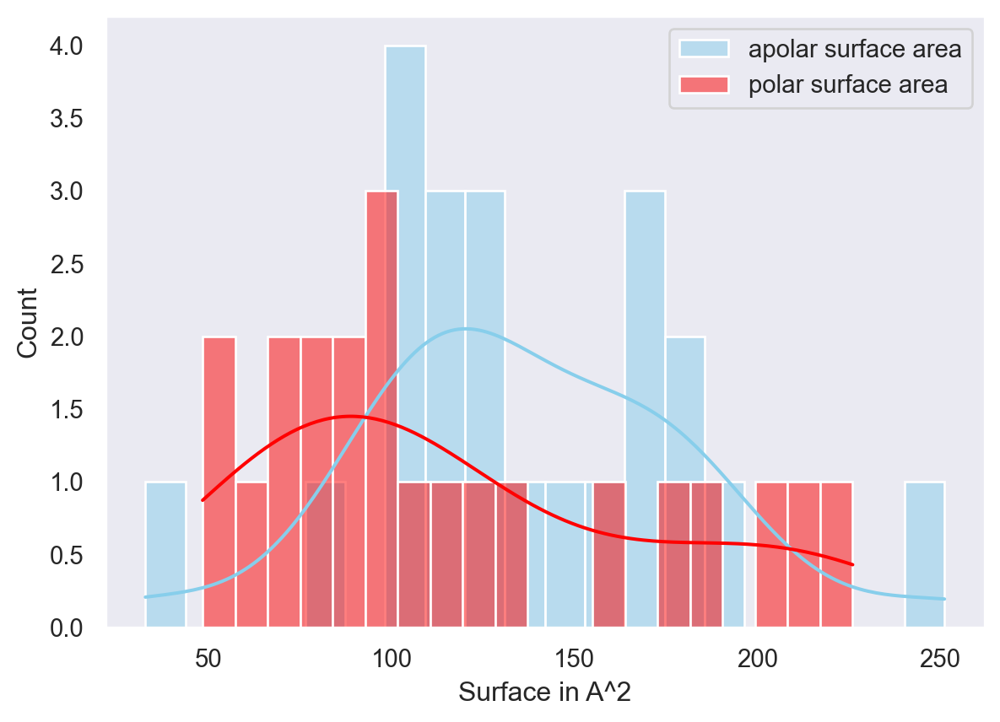
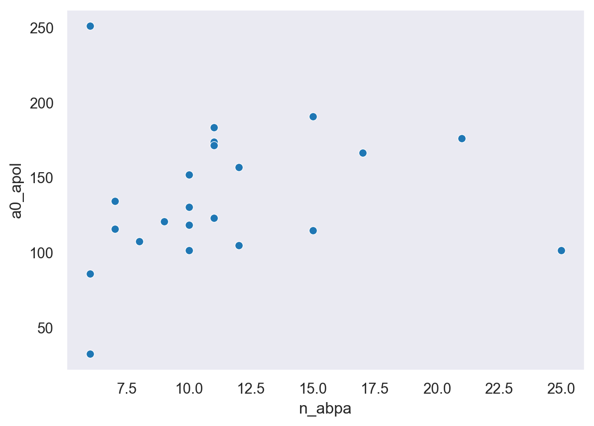

Code
// Create drawing area
divNGL = html`<div style="width:800px;height:600px;position:relative"></div>`;Peter Schmidtke
February 2, 2021
I just released the last version of fpocket (4.0) which contains quite a few new features. Most of the work was done by Mael Shorkar, an eager summer intern we took in at Discngine during last year’s COVID-mess summer. He did a great job under these circumstances (remote work in a new company etc). So kudos to him for these new additions.
First of all, fpocket now supports mmCIF. Yay … yet another very painful task to integrate for yet another painfully crappy molecular file format (I admire the openbabel folks … ;) ). Same as for the PDB format we forked essentially an integration from the VMD molfile plugin and extended that a bit further. Mael also integrated mmCIF writers so all output files can be written in this new crappy format as well. Essentially you now have the choice to write either only pdb or cif or both. So everybody should be happy (nah … that’s never going to be case anyway).
The most interesting part (for me) of this release are additional command line flags and behind these several use cases that can be addressed now. These command line arguments enable mainly to work in a more controlled way with multi chain protein structures. This can be particularly useful if: 1. you want to study only one domain of one of these novel gigantic cryoEM structures 2. you want to study in detail a protein - biomolecule binding site (so other than small molecule) 3. you want to learn key characteristics of peptide/protein binding sites vs RNA/DNA binding sites vs drug binding sites
-c char : (Default is none): Use this flag to choose which chains you want to delete before running fpocket. The selected chains can be specified with ',' or ':' delimiters, for example you can use it '-c B,D' or '-c B:D'. You can delete up to 20 different chains.This flag essentially allows you to explicitly delete particular chain(s) before doing the fpocket run. This allows you to identify (without any bias) clefts that might occur on the PPI that were inaccessible before for pocket prediction.
-k char : (Default is none): Use this flag to choose which chains you want to keep before running fpocket. The selected chains can be specified with ',' or ':' delimiters, for example you can use it '-k A,B,E' or '-k A:B:E'. You can keep up to 20 different chains.This is essentially the inverse operator of the previous flag. If you do not want to list n chains, you can decide to keep only the relevant ones here.
-a char : (Default is none): With this flag you can select a chain you want to be considered as a ligand. Works the same way as the "-r" flag but with a whole chain. Only a single chain can be chosen, for example '-a D'.This flag essentially allows you to target for only one particular binding epitope. If you want to extract descriptors for only that binding site where the select chain is located then you can use the -a flag. Fpocket will hide the chain specified via the flag. Run vertice detection and then will choose all vertices overlapping with the chain you specified in -a. These will then be clustered together into a final “pocket”. This is rather generic and can be applied on protein chains, RNA, DNA … whatever you like given that it is defined in a seperate chain. It is so generic, that in theory you can do even very nasty stuff, but let’s see if you can find that out yourselves.
This argument is particularly interesting when you want to extract examples (3D patches) or numerical descriptors (polar/apolar ASA, curvature, buriedness …) for other binding sites than classical small molecule binding sites. It essentially lies out the basics for training & learning what such other binding epitopes look like. You can use that for a fancy model, or to characterize binding epitopes ultimately.
Seperately, several things were added to the github repo of fpocket, namely the old documentation was ported to markdown (that was painful). There’s also a tiny testing environment, CI/CD pipes finally set up to check compilation and unit tests upon PR’s.
Last, an official fpocket docker image is also available on dockerhub.
Enough text now. Let’s check what you can do with that now. Here we have a nice example of a TEAD4 / YAP complex. I’m interested in studying the clefts covered by YAP on the TEAD4 structure. Before I essentially had to drop YAP from the PDB run fpocket and put back in YAP to see where it is located. Here YAP corresponds to chain L (the red one) and TEAD4 (the grey one).
NGL = require("ngl@next");
// Create trajectory object
stage = new NGL.Stage(divNGL, { backgroundColor: "black",cameraType: "orthographic"});
pdbString = await FileAttachment("6hik.pdb").blob();
structure = await stage.loadFile(pdbString, {ext: "pdb", asTrajectory: false})
structure.addRepresentation("cartoon",{ "sele": ":L", "color": "red"});We can now for instance launch fpocket on TEAD4 by either dropping YAP or by keeping TEAD4 explicitly. Whatever mindset you prefer ;) Let’s be in a positive mood and keep TEAD4:
fpocket -f 6hik.pdb -k Astage2 = new NGL.Stage(divNGL2, { backgroundColor: "black",cameraType: "orthographic"});
pdbString2 = await FileAttachment("6hik_out.pdb").blob();
structure2 = await stage2.loadFile(pdbString2, {ext: "pdb", asTrajectory: false})
structure2.addRepresentation("cartoon",{ "sele": ":L", "color": "red"});When doing this in an automatic way, so with classical fpocket parameters, you’ll now be able to identify pockets that overlap with YAP. That’s kind of nice, but what if I want to study really in detail all the binding interface itself between YAP and TEAD4? In order to instruct fpocket to define a pocket only on the interface itself you can now do something like that:
stage3 = new NGL.Stage(divNGL3, { backgroundColor: "black",cameraType: "orthographic"});
pdbString3 = await FileAttachment("6hik_out_explicit.pdb").blob();
structure3 = await stage3.loadFile(pdbString3, {ext: "pdb", asTrajectory: false})
structure3.addRepresentation("cartoon",{ "sele": ":L", "color": "red"});You can now get the full orange blob as the interacting epitope. Together with that you get the usual statistics etc. The cool thing is, this can be very well used on protein RNA interfaces as well.
If you want to assess druggability, please use the default fpocket parameters and not a guided pocket detection or other pocket detection parameters. The druggability assessment intends to estimate a pockets tractability for small molecule binding sites. Applying this to such larger surfaces is out of the applicability domain here in my opinion.
Ok running these things on individual examples is nice. You can automate things with fpocket quite easily and extract descriptors on a larger scale using the fancy -d flag (oh yes, yet another flag) if the only thing you’re after is descriptor extraction.
Calculating descriptors on binding epitopes is generating the basis for using these to derive several potential applications afterwards. For instance, to derive the druggability prediction in fpocket, first we extracted descriptors of known druggable and supposed non-druggable (no religious debate here) pockets, second we determined the most relevant descriptors and last we trained a scoring function based on these descriptors.
You can very well imagine to do the same on other types of binding epitopes (there are a few papers out there on that already I guess), like protein protein interfaces, antibody / antigene interfaces more specifically, crystal contacts, protein DNA/RNA interfaces etc…
Ultimately these characterisations will allow you to train functions or super fancy deep learning models (if you really need that).
In order to do that on a larger scale you could use dpocket (a less well-known sibling of fpocket), but it currently still doesn’t fully integrate the logic with selecting chains as ligands (still a bit of work needed here). So let’s stick to fpocket on a larger scale example for descriptor extraction which will work just fine:
data/peptide_data/3uqp.pdb B
data/peptide_data/3uri.pdb B
data/peptide_data/4rcp.pdb B
data/peptide_data/4tpg.pdb E
data/peptide_data/5jxh.pdb HLet’s suppose we have a csv file like this one above. It defines a set of PDB files and the chain we want to consider as a ligand explicitly during the fpocket run to assess the binding epitope this chain is making with the “receptor”. You could run this in a very geeky way using this here:
awk '{ print "fpocket -f " $1 " -a "$2 " -d"}' list.txt | sh
This will output a messy thing like this:
cav_id drug_score volume nb_asph inter_chain apol_asph_proportion mean_asph_radius as_density mean_asph_solv_acc mean_loc_hyd_dens flex hydrophobicity_score volume_score charge_score polarity_score a0_apol a0_pol af_apol af_pol n_abpa ala cys asp glu phe gly his ile lys leu met asn pro gln arg ser thr val trp tyr chain_1_type chain_2_type num_res_chain_1 num_res_chain_2 lig_het_tag name_chain_1 name_chain_2
1 0.0021 4091.2471 213 0 0.1831 4.3624 10.8343 0.5065 10.3590 0.0000 17.6957 4.1304 3 31 176.3137 207.7781 91.7446 196.2307 21 1 4 2 3 0 3 1 4 0 4 1 3 0 1 1 6 4 2 3 3 0 0 457 457 PSA A A
cav_id drug_score volume nb_asph inter_chain apol_asph_proportion mean_asph_radius as_density mean_asph_solv_acc mean_loc_hyd_dens flex hydrophobicity_score volume_score charge_score polarity_score a0_apol a0_pol af_apol af_pol n_abpa ala cys asp glu phe gly his ile lys leu met asn pro gln arg ser thr val trp tyr chain_1_type chain_2_type num_res_chain_1 num_res_chain_2 lig_het_tag name_chain_1 name_chain_2
1 0.1847 4801.9624 204 0 0.3529 4.4814 10.8531 0.5450 22.0000 0.0000 27.5882 3.4706 -8 26 183.5595 226.1442 124.2374 226.0680 11 1 0 0 7 0 2 1 7 0 8 4 0 0 4 0 9 5 0 2 1 0 0 328 328 NULL A A
cav_id drug_score volume nb_asph inter_chain apol_asph_proportion mean_asph_radius as_density mean_asph_solv_acc mean_loc_hyd_dens flex hydrophobicity_score volume_score charge_score polarity_score a0_apol a0_pol af_apol af_pol n_abpa ala cys asp glu phe gly his ile lys leu met asn pro gln arg ser thr val trp tyr chain_1_type chain_2_type num_res_chain_1 num_res_chain_2 lig_het_tag name_chain_1 name_chain_2
1 1.0000 2998.7053 187 0 0.5241 4.3207 11.5341 0.5341 48.6735 0.0000 34.3462 5.0769 3 16 107.4789 84.2598 47.7836 96.3200 8 1 2 1 2 0 0 1 1 1 1 3 3 0 3 0 1 0 1 4 1 0 0 238 238 NULL A A
cav_id drug_score volume nb_asph inter_chain apol_asph_proportion mean_asph_radius as_density mean_asph_solv_acc mean_loc_hyd_dens flex hydrophobicity_score volume_score charge_score polarity_score a0_apol a0_pol af_apol af_pol n_abpa ala cys asp glu phe gly his ile lys leu met asn pro gln arg ser thr val trp tyr chain_1_type chain_2_type num_res_chain_1 num_res_chain_2 lig_het_tag name_chain_1 name_chain_2
1 0.9998 1552.9973 110 0 0.4182 4.5201 6.7627 0.4934 36.8261 0.0000 34.2593 4.8519 0 17 105.0637 48.2599 82.1878 27.8238 12 1 1 2 0 0 3 2 0 0 2 1 1 0 3 1 2 0 0 6 2 0 0 594 594 NULL A A
cav_id drug_score volume nb_asph inter_chain apol_asph_proportion mean_asph_radius as_density mean_asph_solv_acc mean_loc_hyd_dens flex hydrophobicity_score volume_score charge_score polarity_score a0_apol a0_pol af_apol af_pol n_abpa ala cys asp glu phe gly his ile lys leu met asn pro gln arg ser thr val trp tyr chain_1_type chain_2_type num_res_chain_1 num_res_chain_2 lig_het_tag name_chain_1 name_chain_2
1 0.0044 3875.7029 152 0 0.1513 4.4958 9.8519 0.5972 9.5652 0.0000 -7.5946 3.4865 -7 27 114.7247 187.8280 70.7198 141.5900 15 2 3 2 8 0 0 4 4 2 0 1 0 0 0 2 2 4 1 1 1 0 0 499 499 NULL A A
Let’s clean this up the geeky way:
awk '{ print "fpocket -f " $1 " -a "$2 " -d"}' list.txt | sh | awk '{if(NR%2==0)print}'
This should only give the descriptors:
1 0.0021 3972.3301 213 0 0.1831 4.3624 10.8343 0.5065 10.3590 0.0000 17.6957 4.1304 3 31 176.3137 207.7781 91.7446 196.2307 21 1 4 2 3 0 3 1 4 0 4 1 3 0 1 1 6 4 2 3 3 0 0 457 457 PSA A A
1 0.1847 4604.5068 204 0 0.3529 4.4814 10.8531 0.5450 22.0000 0.0000 27.5882 3.4706 -8 26 183.5595 226.1442 124.2374 226.0680 11 1 0 0 7 0 2 1 7 0 8 4 0 0 4 0 9 5 0 2 1 0 0 328 328 NULL A A
1 1.0000 2895.7646 187 0 0.5241 4.3207 11.5341 0.5341 48.6735 0.0000 34.3462 5.0769 3 16 107.4789 84.2598 47.7836 96.3200 8 1 2 1 2 0 0 1 1 1 1 3 3 0 3 0 1 0 1 4 1 0 0 238 238 NULL A A
1 0.9998 1574.4559 110 0 0.4182 4.5201 6.7627 0.4934 36.8261 0.0000 34.2593 4.8519 0 17 105.0637 48.2599 82.1878 27.8238 12 1 1 2 0 0 3 2 0 0 2 1 1 0 3 1 2 0 0 6 2 0 0 594 594 NULL A A
1 0.0044 3794.7029 152 0 0.1513 4.4958 9.8519 0.5972 9.5652 0.0000 -7.5946 3.4865 -7 27 114.7247 187.8280 70.7198 141.5900 15 2 3 2 8 0 0 4 4 2 0 1 0 0 0 2 2 4 1 1 1 0 0 499 499 NULL A AI did this on a larger list of peptide binding structures and this is typically a good way to start studying some of the properties of these epitopes compared to drug binding sites or others.
import seaborn as sns
import pandas as pd
import matplotlib.pyplot as plt
sns.set_context('notebook')
sns.set_style('dark')
df=pd.read_table('peptide_out.txt',delim_whitespace=True,header=None,names=["cav_id","drug_score","volume","nb_asph","inter_chain","apol_asph_proportion","mean_asph_radius","as_density","mean_asph_solv_acc","mean_loc_hyd_dens","flex","hydrophobicity_score","volume_score","charge_score","polarity_score","a0_apol","a0_pol","af_apol","af_pol","n_abpa","ala","cys","asp","glu","phe","gly","his","ile","lys","leu","met","asn","pro","gln","arg","ser","thr","val","trp","tyr","chain_1_type","chain_2_type","num_res_chain_1","num_res_chain_2","lig_het_tag","name_chain_1","name_chain_2"])
# d=as.data.frame(read.table("peptide_out.txt",sep=" ", header=TRUE, col.names=c("cav_id","drug_score","volume","nb_asph","inter_chain","apol_asph_proportion","mean_asph_radius","as_density","mean_asph_solv_acc","mean_loc_hyd_dens","flex","hydrophobicity_score","volume_score","charge_score","polarity_score","a0_apol","a0_pol","af_apol","af_pol","n_abpa","ala","cys","asp","glu","phe","gly","his","ile","lys","leu","met","asn","pro","gln","arg","ser","thr","val","trp","tyr","chain_1_type","chain_2_type","num_res_chain_1","num_res_chain_2","lig_het_tag","name_chain_1","name_chain_2")))
p=sns.histplot(data=df, x="a0_apol", color="skyblue",bins=20, label="apolar surface area", kde=True)
p.set(xlabel='Surface in A^2', ylabel='Count')
p=sns.histplot(data=df, bins=20,x="a0_pol", color="red", label="polar surface area", kde=True)
p.set(xlabel='Surface in A^2', ylabel='Count')
p.legend() <matplotlib.legend.Legend at 0x7fb9ebf9ee80>
<AxesSubplot:xlabel='n_abpa', ylabel='a0_apol'>
The plot above shows the relationship between the number of ABPA’s (almost burried polar atoms - if you don’t know what these are, you should read this paper on shielded hydrogen bonds and the apolar surface area. Coloring done is by volume of the “pocket”.
All of these new functionalities (a part from the support of yet another “useless” file format) set the grounds for characterization of various types of binding epitopes using fpocket. This can terefore be used for functional characterization of protein structures, ultimately indicating where might bind what on a protein structure.
But still a few sleepless nights to go until we can achieve that. Fortunately everything is opensource, so you can do that before!!! ;)